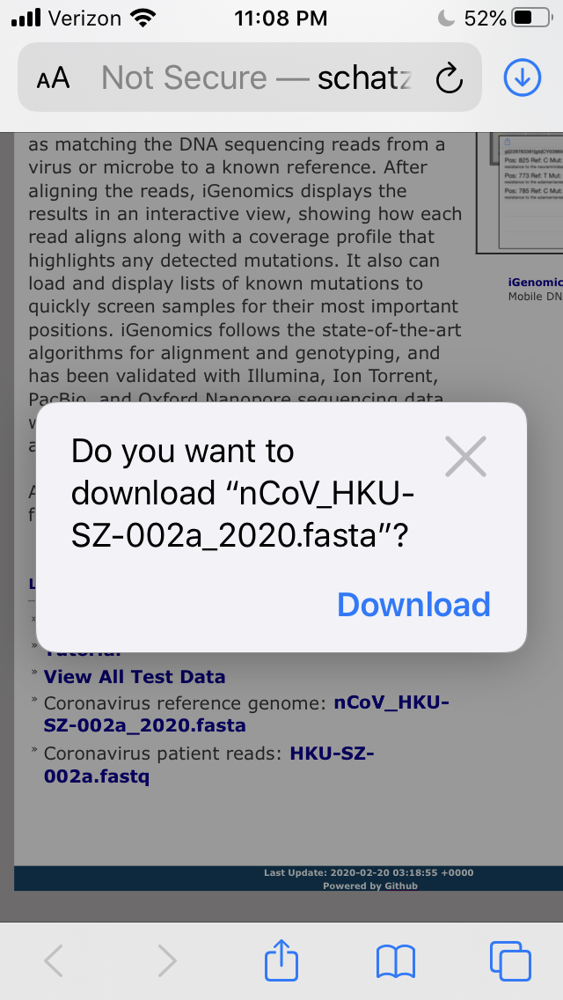
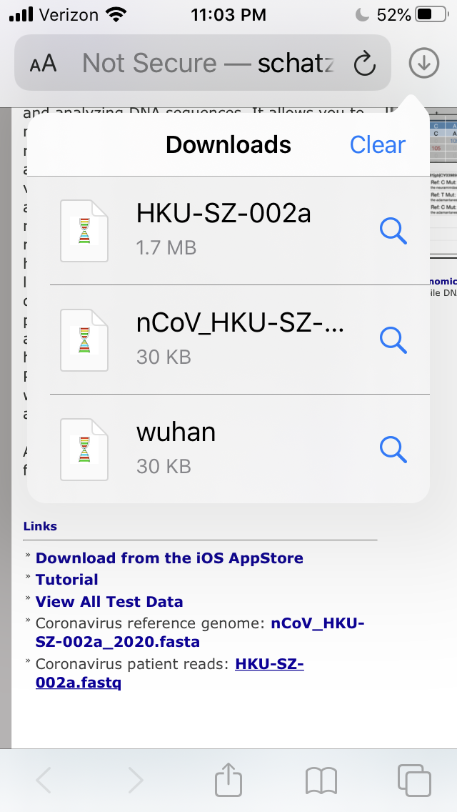
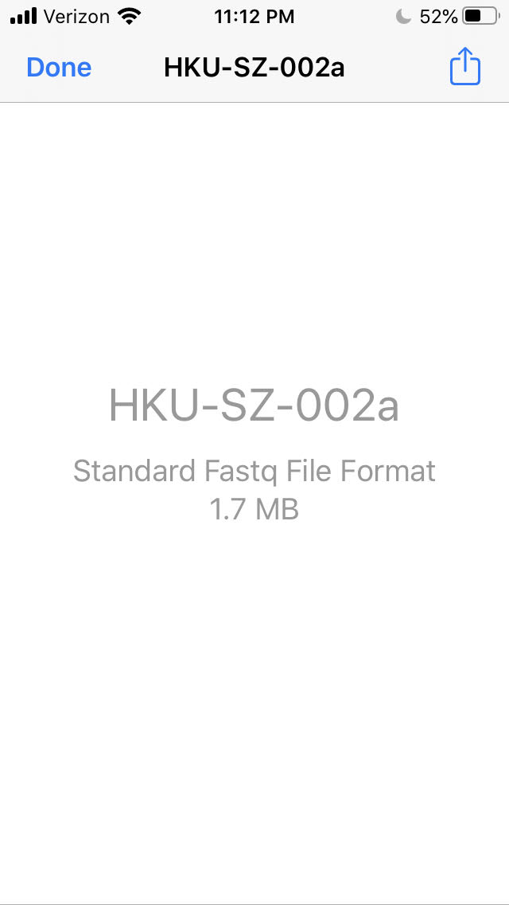
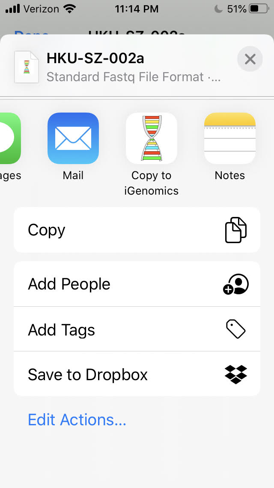
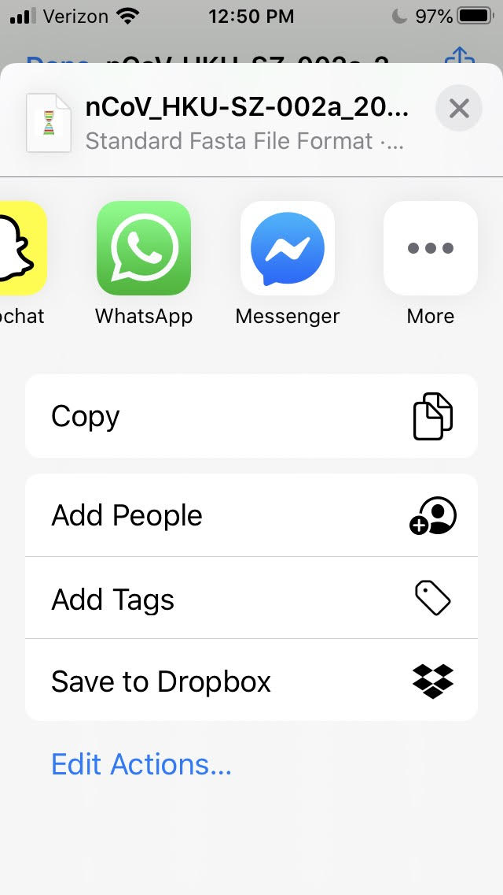
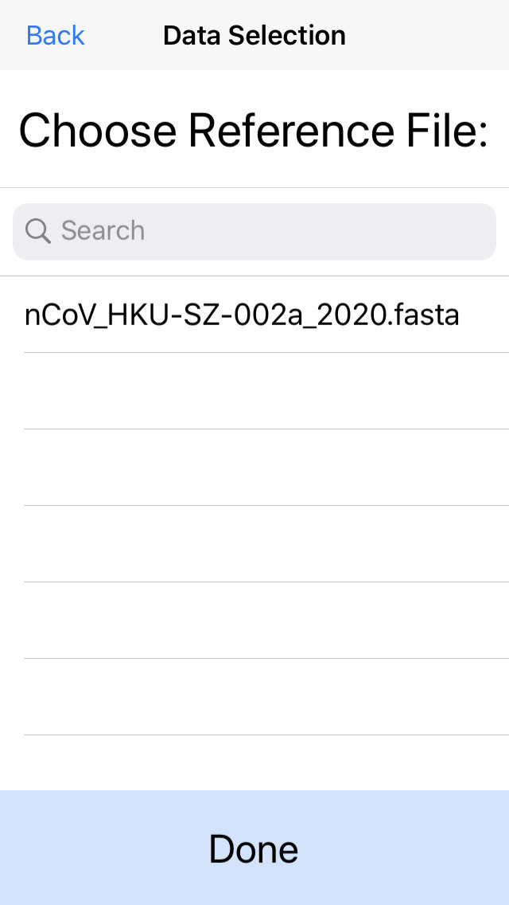
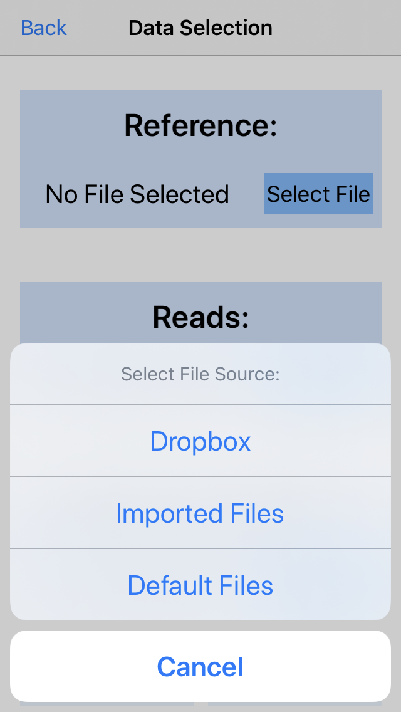
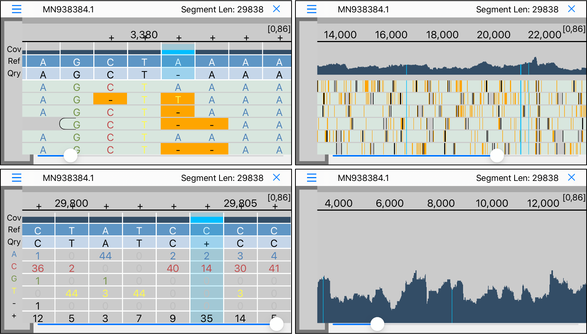

iGenomics Data Loading Tutorial
Aspyn Palatnick,
Bin Zhou,
Elodie Ghedin &
Michael Schatz
iGenomics can easily load data (reference genomes and reads files) from the web
1. Browse to a webpage with links to the data you would like to download
For example, here are several coronavirus data sets to pick:
| » | Coronavirus reference genome: coronavirus.RaTG13.fa |
| » | Coronavirus bat genome: coronavirus.bat-SL-CoVZXC21.fa |
| » | Coronavirus patient genome: nCoV_HKU-SZ-002a_2020.fasta |
| » | Coronavirus patient reads: HKU-SZ-002a.fastq |

2. Download the file that you would like to add to iGenomics from Safari or other browsers
Note- this tutorial is done in Safari but you can load reference/reads data into iGenomics
through any browser or through any app or process capable of sharing (e.g. AirDrop, Google Drive, Mail, etc.).

3. Once the file is downloaded, click the "Downloads" icon in the top right. Then, press the
file in the "Downloads" list to bring the file into display.

4. Press the share icon in the top right.

5. Press Copy to iGenomics.

6. If you do not see “Copy to iGenomics” available, press “More” on the far right of the
share toolbar.
7. In the list of options that display, scroll down and you will see “Copy to iGenomics”.
Press this to open your file in iGenomics. If would like to add the “Copy to iGenomics” option
to your favorite apps in the share toolbar (the apps that are shown in the share toolbar
without having to press more), select “Edit” on the top-right and press the green icon next
to “Copy to iGenomics” to add that to your favorites.

8. After pressing Copy to iGenomics, the iGenomics app will open and, if the file is a fasta
file, you can choose whether to load the imported file as a reference or reads file.
If the imported file is a fastq file, the file will automatically be imported as a reads file and the
"Select Type" alert will not display.

9. Press "Select File" on reference or reads (depending on the type of the imported file) and
then choose "Imported Files".
10. The imported file is now listed in the collection of imported files.
Press the file and press "Done" to select the file in the file picker. If you would ever
like to permanently delete this file from iGenomics, swipe left on the file name and
choose the delete option.

You can then align the data within iGenomics. See the Alignment
Tutorial for details
Links